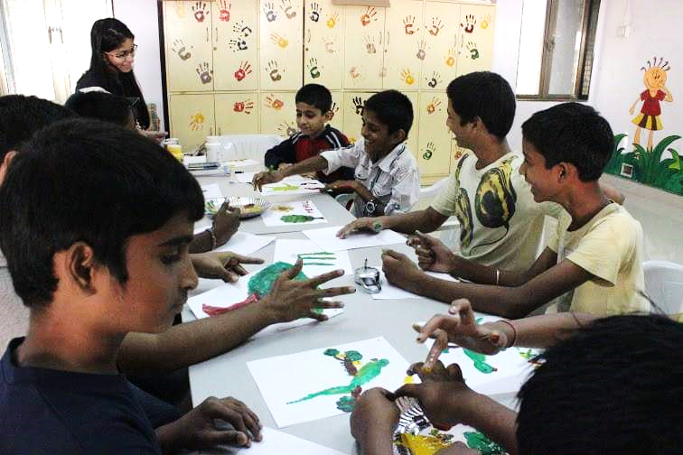

Educational Outreach, NSS IIT Bombay
Educational Outreach (EO) is one of the 4 departments of NSS, IIT Bombay. I served in the department as a volunteer in my first year, Activity Associate in my second year and Department Head in my third year. Listed below are several projects under EO that I spearheaded. Click on each of them to know more about them.
This is the flagship activity of EO. Our volunteers go and teach in several educational NGOs in and around the campus.
Prayog aims at inculcating a scientific temperament among children by, as the name suggests, experimentation. In these sessions, complex scientific principles are demonstrated to school children from nearby NGOs in a lucid way by the use of experiments.
Muskaan means 'A smile'. It aims at enabling students to hone their cultural skills. Volunteers teach cultural activities like dance, dramatics and fine arts in weekly sessions. 
This initiative aimed to teach basic English and Computer literacy to the mess workers and security guards of the campus.
The aim of this initiative was to record audio books for the blind. The content ranges from news bulletins to novels. Click here to visit VFP.